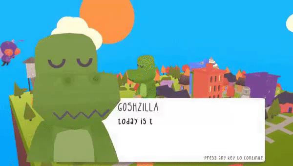
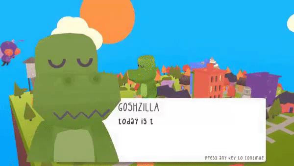

distanced is a short puzzle game where you control two people at once in two separate locations, trying to get each person to their exit.
click here to play
what i learned:
- - how to create engaging puzzle levels that slowly teach the player mechanics
- - how to work with Unity's tile system to make level creation a breeze
- - creating something for a loved one is very rewarding
challenges i overcame:
- - i found it difficult to create new levels with existing mechanics, but found creative ways to combine them in the end
- - creating levels in such a small area, though this constraint in the end i think added to the game
things i would do different:
- - i would make some of my code more modular, this game could be hard to expand upon without refactoring some systems
- - level 8 feels very cheap as a concept, i would scrap this level and try and come up with something that feels better for the player


 
